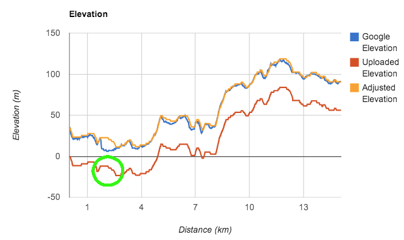

Upload a Garmin Training Center (.TCX) file to analyze elevation data.
Here is a sample TCX file you can upload.
For the sample, this is what you'll see:
In this case, the uploaded elevation profile almost matches the geographic database (Google) profile except that the GPS start-point was way off (always is when I start among buildings in the city).
Another difference is highlighted by the green circle. That is the Dunsmuir Viaduct, an over-pass. While my Garmin 500 accurately caught the over-pass elevation with it's barometric altimeter, Google's elevation matches the ground below the over-pass.
The yellow "Adjusted Elevation" keeps the over-pass and the rest of the actual recorded profile but shifts it up so that the start and end points better match Google's geographic profile. This elevation takes the best of the other two. The "Adjusted Elevation" version of your uploaded file is available for download.
This project is powered by GitHub